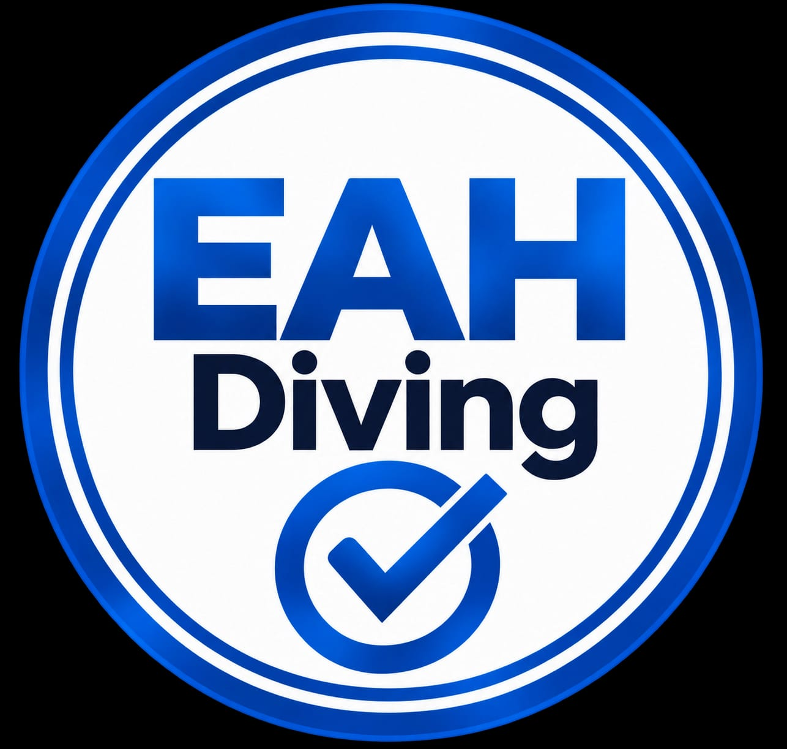
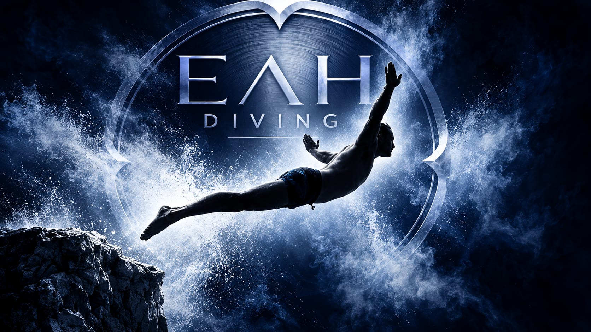
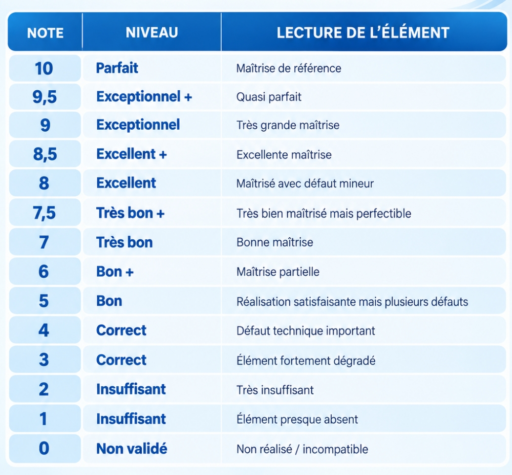
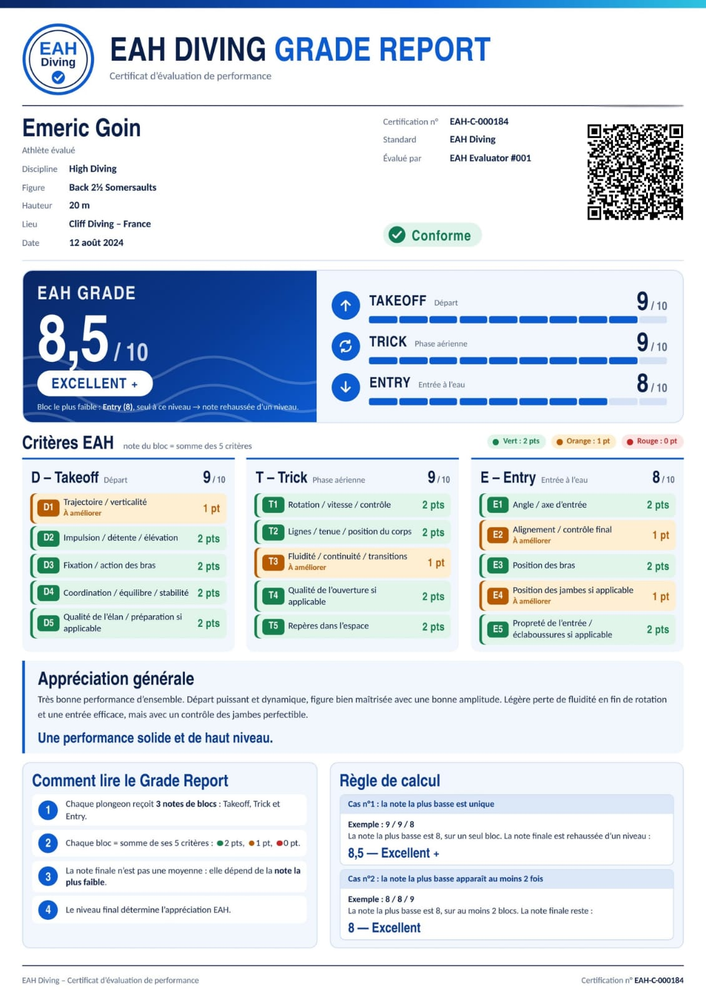
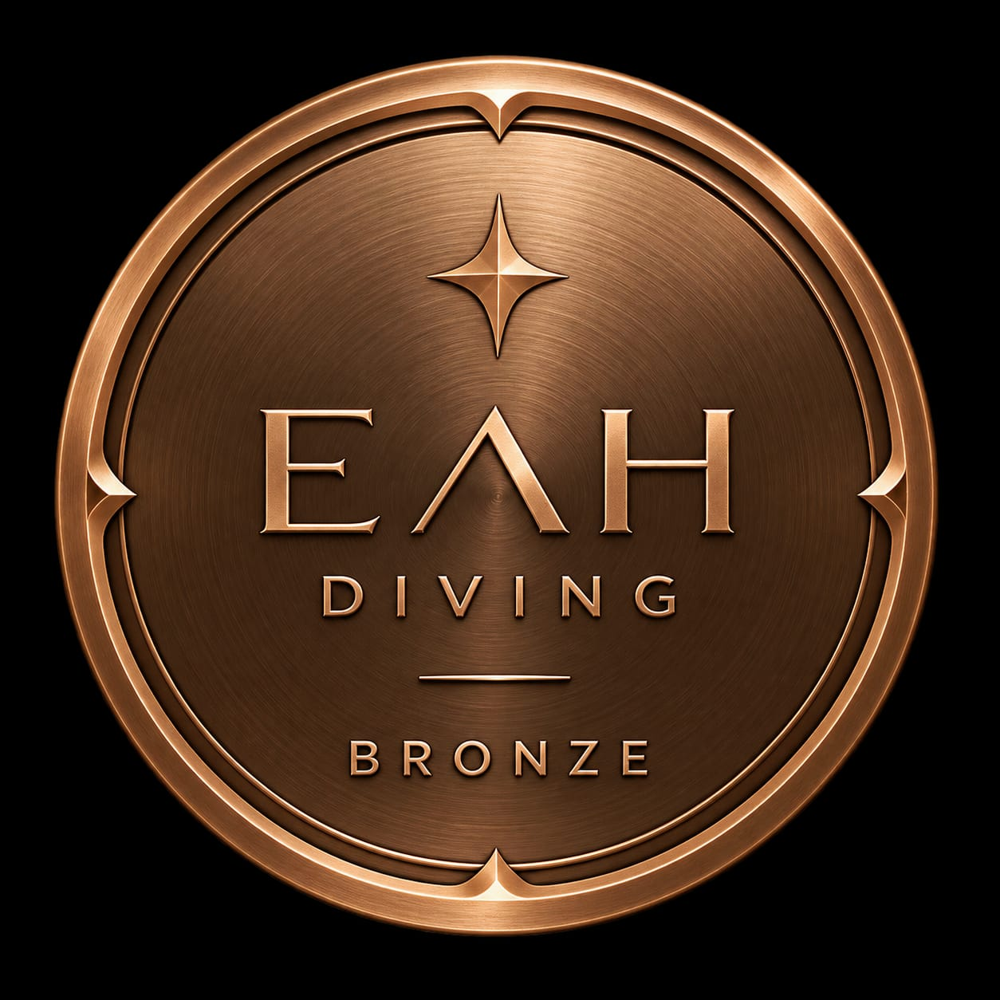
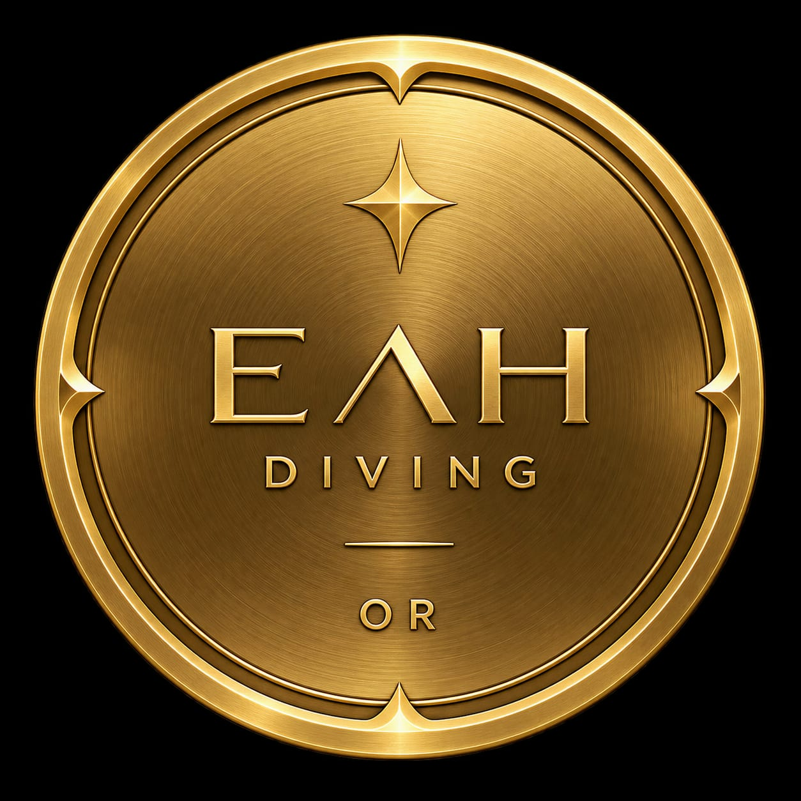
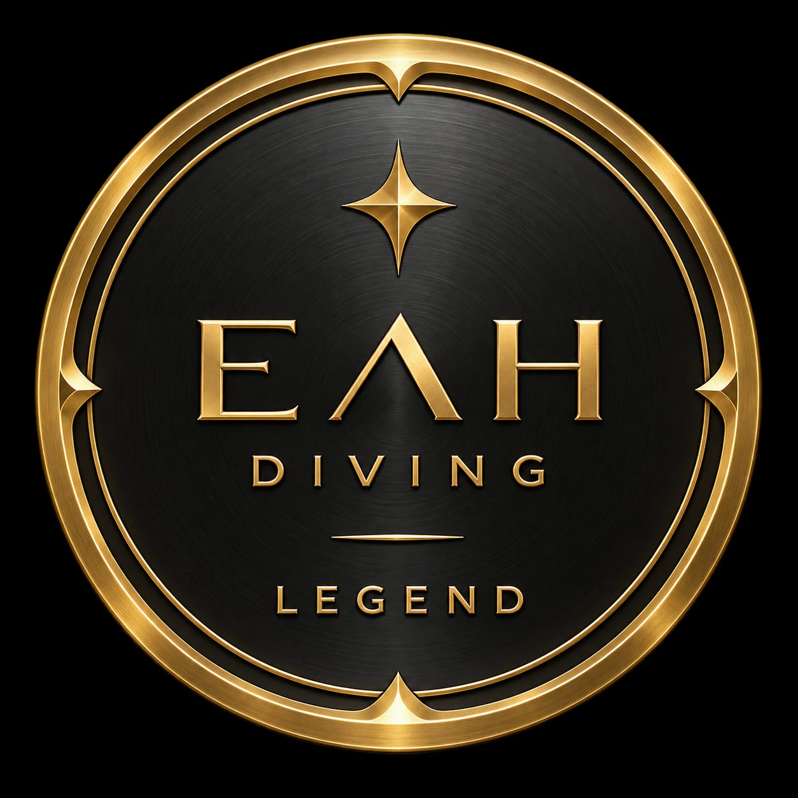
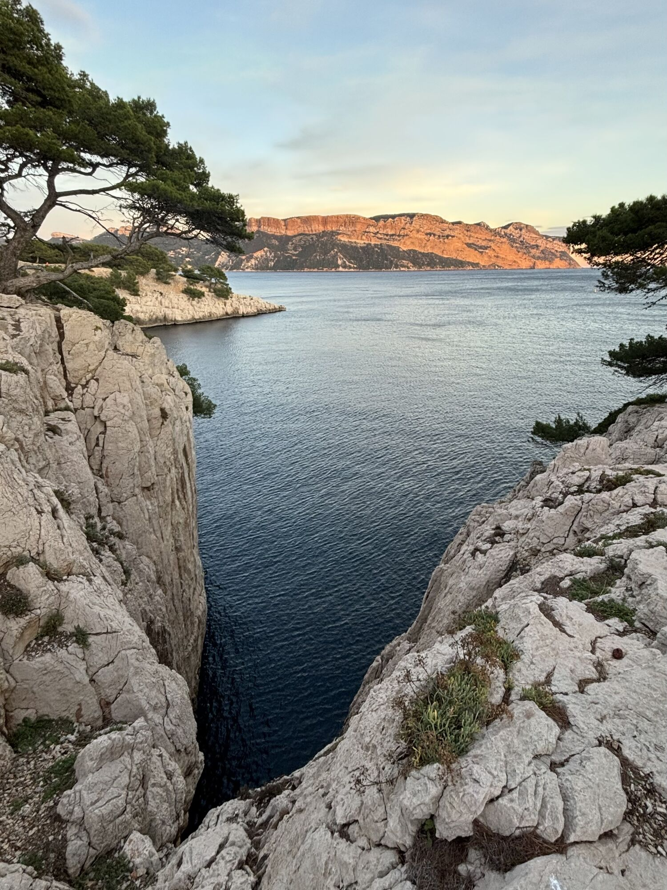
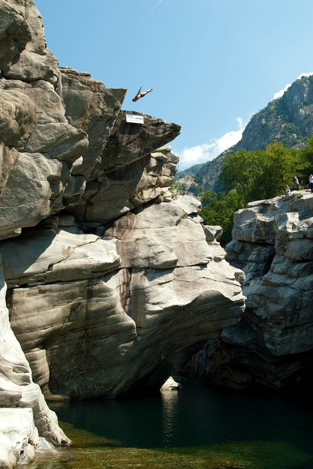
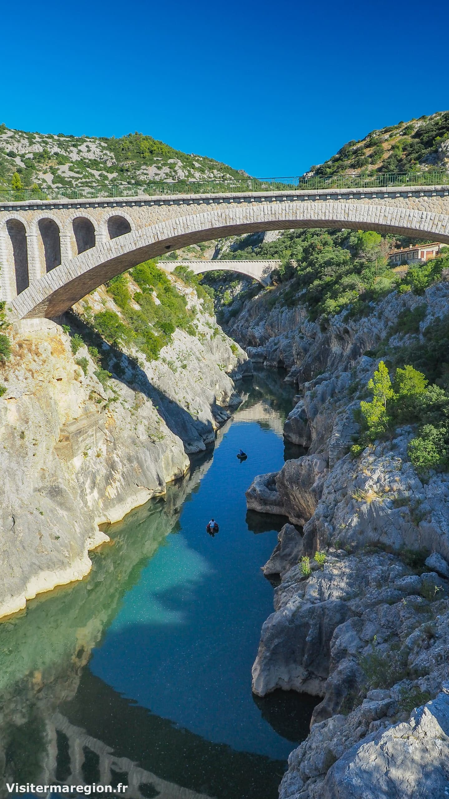

DISCIPLINE 01
Plongeon olympique
Technique, impulsion, rotations, positions et maîtrise de l'entrée à l'eau.
Découvrir →
EAH Diving propose un système de grading premium pour analyser, valoriser et structurer la progression en plongeon, High Diving, Freestyle / Døds et saut de l'ange.
Technique, impulsion, rotations, positions et maîtrise de l'entrée à l'eau.
Découvrir →Style, amplitude, tolérances spécifiques et contrôle global du plongeon.
Découvrir →Grande hauteur, difficulté, maîtrise aérienne et contrôle de l'entrée.
Découvrir →
Trajectoire, posture, style visuel et angle d'entrée spécifique.
Découvrir →Chaque performance est analysée à travers trois grandes phases : Takeoff, Trick et Entry. La lecture EAH vise à distinguer la qualité d'exécution, la variété des figures, la difficulté technique et la progression globale.
Clique sur D, T ou E pour consulter la fiche de notation détaillée. La note EAH finale ne repose pas sur une moyenne simple : elle dépend du critère le plus faible.
Impulsion, trajectoire, coordination, fixation, stabilité et qualité de la préparation.
Voir la grille →Rotations, lignes, maîtrise du corps, fluidité, ouverture et repères dans l'espace.
Voir la grille →Angle, axe, alignement, contrôle final, position des bras, des jambes et propreté de l'entrée.
Voir la grille →EAH ne fait volontairement pas une simple moyenne des trois notes. La note finale repose sur le critère le plus faible, afin qu'un plongeon ne puisse pas obtenir une très haute note avec une faiblesse importante sur une phase.
On compare les trois notes D, T et E pour déterminer le bloc le plus faible.
La note finale est égale à cette note la plus basse.
On ajoute +0,5 point à cette note la plus basse.
Le résultat obtenu permet d'attribuer le niveau final selon l'échelle EAH.
La note la plus basse est 8, elle est isolée, donc la note finale est 8,5.
La note la plus basse est 8, elle apparaît au moins 2 fois, donc la note finale reste 8.
La note la plus basse est 6, elle apparaît au moins 2 fois, donc la note finale reste 6.
Cette échelle présente la lecture de la note finale et l'interprétation associée.

Exemple de restitution complète avec les notes par critère, la lecture finale et les éléments à améliorer.

Les blazons mesurent plusieurs choses en même temps : la variété des plongeons, la polyvalence entre les groupes, la qualité d'exécution avec les notes EAH et progressivement la difficulté technique.



3 figures de difficulté EAH 4 obtenant au moins 9/10.
3 figures de difficulté EAH 4 obtenant au moins 9/10.
Possibilité d'aller jusqu'à la difficulté EAH 5, selon le référentiel de difficulté correspondant.
Recherche un plongeon par nom, code, discipline ou groupe. Clique sur un plongeon pour consulter sa fiche détaillée et ses statistiques.
Cette rubrique permet d'accéder au référentiel EAH par nom de plongeon, code et catégorie. En cliquant sur le plongeon, tu affiches sa fiche, ses caractéristiques, les hauteurs connues et le nombre de personnes l'ayant validé ainsi que les notes observées.
Découvre plusieurs spots référencés dans l'univers EAH Diving. La sécurité doit toujours être vérifiée sur place.

Spot naturel emblématique pouvant être intégré au référentiel EAH Diving avec hauteur indicative et description du contexte.

Spot de référence pouvant être intégré dans le référentiel EAH avec description, accès et hauteur indicative.
Spot à intégrer dans la base EAH avec sa hauteur, son descriptif et ses spécificités de pratique.

Spot très haut à intégrer dans le référentiel avec un niveau de difficulté et des informations de sécurité associées.
Suivi, informations EAH et conseils techniques.
Tu peux modifier cette zone pour afficher chaque semaine un plongeon, un spot, une progression ou un Grade Report marquant.
EAH Diving est un système de grading et de valorisation du plongeon. Il structure l'évaluation, met en avant les critères techniques, la progression, la difficulté et l'historique des performances.
Clique sur un thème pour ouvrir sa fiche. Tu pourras ensuite y ajouter la vidéo correspondante et compléter les explications.
Principes, points d'attention et lecture EAH.
Départ, repères et contrôle de rotation.
Trajectoire, retour et lecture technique.
Ouverture, repères et contrôle du corps.
Lancement, axe, dissociation et régularité.
Grading vidéo, profil + carte et carte EAH Diving.
Analyse d'une vidéo avec lecture EAH et restitution des notes.
Création du profil EAH et carte de suivi.
Carte EAH Diving liée à ton profil.
Dépose les informations correspondant à ton plongeon.
Précision, technique, rotations, positions et maîtrise de l'entrée.
Trajectoire, impulsion, détente, élévation, fixation et coordination.
Rotations, lignes, position du corps, ouverture et contrôle.
Angle, axe, alignement, bras, jambes et propreté.
Style, amplitude, maîtrise aérienne et spécificités d'entrée.
Standing, prise d'élan, impulsions et départs spécifiques.
Rotation, vitesse, ligne, fluidité, ouverture et repères.
Les critères tiennent compte des particularités propres au Freestyle et au Døds.
Hauteur, difficulté, maîtrise aérienne et contrôle de l'entrée.
La hauteur réelle ou estimée est intégrée au Grade Report.
Saltos, vrilles, position et niveau de difficulté sont associés au plongeon.
Takeoff, Trick et Entry permettent de distinguer la difficulté et la qualité d'exécution.
Trajectoire, posture, contrôle du corps et maîtrise de l'entrée.
Impulsion, trajectoire et qualité générale de la mise en mouvement.
Contrôle du corps, ligne générale et maîtrise de la phase aérienne.
L'angle d'entrée est évalué selon le référentiel EAH applicable au saut de l'ange.